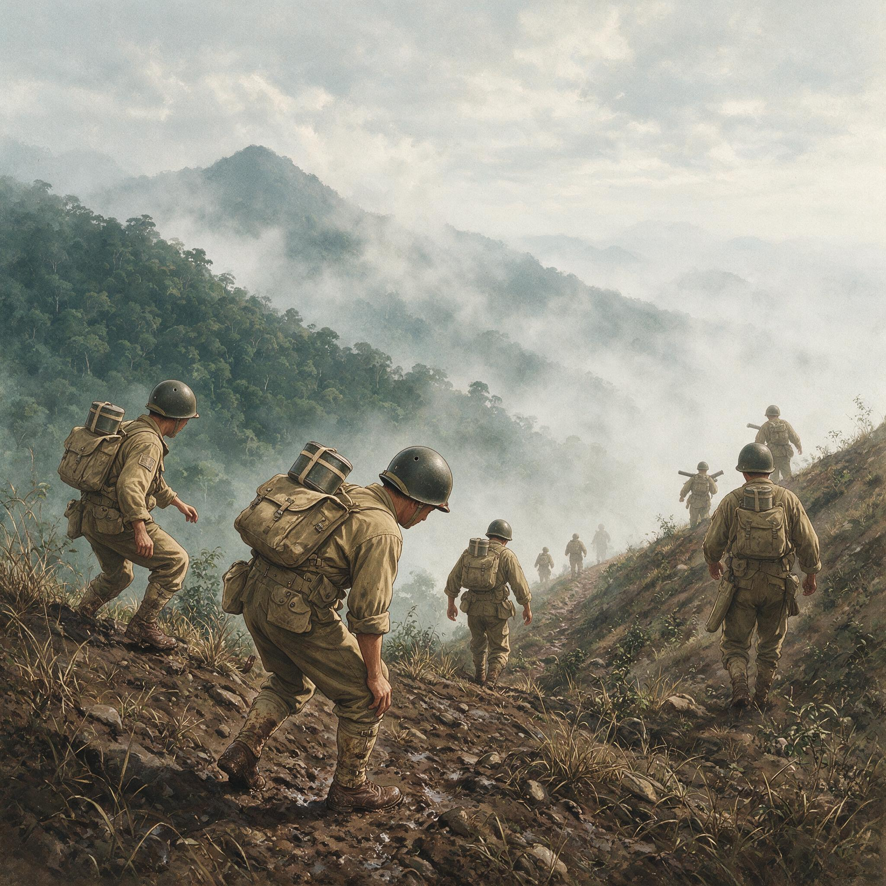

第 16 章
密支那：血肉堆出的跑道
命令是在一个没有太阳的早晨传来的。传令兵从营部方向走来，胶鞋陷进泥里，每一步都拔出一声轻响。士兵们正蹲在竹棚下吃早饭，铝盆里的口粮腾着热气。

驻印军翻越那加山脉反攻
AI 生成插图，非史实影像。
命令很短：向南，密支那。没有人多问。一个叫李国栋的士兵把最后一块饼塞进嘴里，站起来，紧了紧腰带。新班长从前排走回来，只说了一句话：跟紧了。
他们是在胡康河谷里证明过自己的一批人。从列多出发的时候，没有人想过他们能走到这么远。公路还没有修通，雨季还没有结束，前锋已经越过了杰布山隘。现在，密支那横在前方。
那不是丛林里的一座据点。那是缅北最大的城市之一，是伊洛瓦底江上的码头，是铁路交汇的地方，是日军在缅北防御纵深里最后的大城。他们要去的，是一个真正意义上的城市攻坚战。
出发之前，没有人告诉这些士兵，密支那机场已经被一群中美混编的突击队突袭成功。他们只知道自己在向南走，而前方不断地传来枪声。那些枪声从五月十七日夜里开始响起，时断时续，却一直没有停过。奇袭是从西面进入的。
中美混合突击队在山地里走了将近二十天，靠骡马和人力驮运电台、迫击炮与重机枪，沿着山脊和山谷反复穿行，穿过了日军设在铁路线上的警戒线，逼近密支那西郊机场。日军在机场附近的守备兵力不足，警戒松懈。
黎明前，信号弹在机场西北角升起。第一波冲击在很短时间内压过了跑道外围的散兵壕。中国士兵和美国突击队员越过铁丝网，向跑道两侧的日军掩体投掷手榴弹。天刚亮，第一架美军运输机从云层下钻出，对着刚刚被清空的跑道俯冲，然后在跑道上弹跳了几下，停稳在跑道中央。
那是密支那战役的第一个转折。机场被夺了下来。这条跑道以前是日军航空兵北出缅北的支点，现在却成了盟军向南推进的跳板。
当天下午，载着增援部队和弹药的运输机一架接一架降落。飞机在跑道上扬起黄尘，螺旋桨的气流把跑道两侧的草压得伏在地上。很多中国士兵是第一次见到可以在没有公路的地方直接降落的大型运输机。
他们从跑道旁经过时，看见美军地勤人员正在指挥车辆卸货。有人低声说了一句：这样打仗，倒省了走路。
省了走路，但不省命。机场攻占的当天，盟军指挥部的判断是乐观的。他们相信密支那的日军兵力薄弱，机场一旦失守，守军将被迫撤往城外或者迅速崩溃。这种乐观并非没有根据。空中的侦察报告一直认为密支那的防御工事范围有限，守军不过是分散的警戒部队。突击队发起攻击时，也确实没有遇到成规模的顽强抵抗。
但日军的反应比预期要快得多。负责密支那守备的日军指挥官命令守军放弃机场周边阵地，将主力收缩进城区，依托预先修筑的工事转入持久防御。这个决定在最初的几天里被盟军误读为溃退的信号。突击队奉命从机场向城区推进，准备一鼓作气拿下火车站和城中心。然而，他们在城市边缘遇到了第一道真正的防线。
密支那城区的防御体系远比空中侦察所显示的要复杂。日军在战前和占领期间，利用城内的铁路路基、混凝土建筑和排水沟渠，构筑了大量隐蔽火力点。许多掩体用铁轨和原木做骨架，上面覆盖数米厚的沙袋和泥土，有的还设有地下弹药库和伤员掩蔽所。碉堡之间以交通壕相连，迫击炮和轻机枪可以互相支援。
城内的铁路车站、邮局、警察局、学校等建筑被改造成据点，面向街道的窗户堆满沙袋，墙壁上凿出射击孔。整座城被改造成一个立体的堡垒，而城外的稻田和甘蔗地在雨季到来后变成了半淹的沼泽。
雨季提前报了到。五月中旬以后，缅北上空几乎每天下雨。雨水来得快，走得慢，一场雨过后，云层低得几乎压着树梢。道路变成淤泥，战壕里积满黄水。
补给并不缺，机场就在身后，运输机仍然在降落。但步兵向前推进时，只能靠两条腿在泥水里移动。坦克和重炮无法进入城区。空中轰炸可以摧毁地面建筑，却无法彻底摧毁深埋地下的掩体。每一次对筑垒地堡的进攻，仍然需要步兵靠近到可以投掷手榴弹的距离，在这个距离上，日军的机枪和步枪可以在两三秒钟内把一条巷子变成死亡地带。
战斗变成逐街逐巷的啃咬。攻击一个掩体，先用巴祖卡和火焰喷射器打，再由步兵从侧面绕近。日军并不固守每一个点，他们会在阵地失守前从交通壕里转移，然后在下一条巷子里重新出现。中国士兵在街道上学会了辨认射击孔和伪装门板。
他们把竹梯架在墙边，从二楼翻进去，一层一层地清。每次清完一栋楼，就要在楼底堆上沙袋，把窗口封死。新三十师一个团的战斗日志记录着，有时一天的进展只是推进几十米，夺取三座房屋，伤亡却达到三四十人。
一个从胡康河谷下来的排长后来说过一句话：丛林里是看不见敌人，城里面是看见了也没办法。丛林里的危险来自突然射出的子弹，而城里的危险来自每一面墙、每一扇门、每一个下水道口。士兵们学会了先用机枪扫射街角的可疑沙袋堆，再派爆破组上前放炸药。密支那城里的爆炸声从早到晚没有停过。炸药包是消耗最快的弹药之一。有时候一个班打到黄昏，算下来投掷出去的手榴弹比领到的口粮还要多。
史迪威对密支那作战的重视毫不掩饰。这在他个人的军事生涯里，具有特殊的分量。缅甸作战的败绩使他一直渴望用一场无可争辩的胜利来扭转局面。密支那机场的夺取让他看到了这种可能性。他一度把密支那作战视为中缅印战场反攻缅甸的核心节点。
他在日记里用短促而急迫的句子记录过那段时间的心境：机场已在手中，必须立刻扩大战果。他在机场被夺后要求部队尽快拿下城区，并要求美军突击队和中国部队继续向前推进，不要停下来等待补给和休整。
问题在于，兵力从一开始就显得不够。突袭机场本身就是一种奇袭式的冒险，投入的是轻装的快速纵队。当日军收拢防御之后，攻方需要的不再是轻装步兵，而是强攻城市的重装部队。但最初几周，进入密支那城区作战的兵力始终没有形成压倒性优势。一部分部队被留在机场担任守备，一部分部队在城郊的交通线上被日军小股部队牵制。真正能用于巷战的兵力，分散在几条互不连通的战线上。预备队的调动受到道路和天气的限制。指挥部对日军在密支那城内的实际兵力估计不足，认为守军不过几百人，而实际上，日军的作战兵力和后勤人员加在一起，足以支撑一场长期防御。
雨没有停。机场上的运输机起降频率降了下来。跑道是土质的，雨一泡就软。飞机降落时溅起成片的泥水。这时候，一批穿孔钢板被空运了进来。
那些钢板长约三米，宽四十厘米左右，表面打着一排排圆孔，边缘有互相咬合的卡槽。工兵和步兵被调去铺设跑道。一块一块地铺下去，先从跑道头开始，延伸到停机坪。每块钢板大约三十公斤，在雨里沾满了泥水，两个人抬一块，弯着腰往前送。钢板上的圆孔会灌进泥浆，踏上去会从孔里挤出黄水。
飞机就降落在这些钢板上。有的板被压弯了，有的板被泥水淹没了一半。工兵冒着雨蹲在跑道两侧补铺。那些钢板一条条躺在泥地上，看起来像是往城市的腹地里插进去的一把铁梯。
铺跑道的人当中，有些是从城里刚刚轮换下来的步兵。他们满身泥，手上的枪还没交回去，就又被叫去抬钢板。有人问为什么不直接卸载在停机坪。回答是：停机坪也泡软了，运输机必须一直滑到最南端才敢掉头。
于是，中国士兵们在那条跑道上走了无数个来回。他们弯腰放下钢板，再直起身来，看见跑道尽头的树林里冒出的黑烟，听见南边城区的炮声。那炮声是他们自己打出去的，也是日军打回来的。
城内战斗最激烈的时候，进攻命令常常是简单的：某排，向某街口推进。这样的命令没有细节。街口在哪里，被哪一栋楼的火力封锁，需要多少炸药，旁边有没有日军的暗堡，这些都要等士兵到了那里才知道。
一些连队在半天的进攻里就失去了正副排长。排的主力班往往由老兵临时顶替指挥。指挥链条在巷战里变得极短：班长死了副班长顶，副班长死了老兵顶。团里的伤亡统计常常只来得及记一个数字：今日伤多少，亡多少。一个团的作战日志写过，某连在城西街区担任突击任务，一天之内伤亡四十二人；连队随后撤到机场以北整补，第二天又填进了一条巷子。
填进去。那个词后来在密支那被用得很广。部队是填进去的。就像往一个漏水的缺口里，一锹一锹地填土。一锹下去了，水把土冲走了，再填下一锹。城区的推进就是这样。
攻下了一条巷子，日军在夜里反扑，又丢掉。丢掉的巷子再攻。有时候同一个街角在同一周里三次易手。士兵们不再抱怨命令是不是合理，他们只记住一件事：日本人的枪眼在哪里。
上一次是哪个方向打死了自己的班长，下一次就要先往那个方向扔手榴弹。
基层的士兵在这种战斗里展现出一种超出训练课目的能力。兰姆伽整训教给他们的是丛林作战、步兵协同、武器使用。但密支那城里的战斗逼着他们自己摸索出一套城市攻坚的办法。他们学会了听枪声辨位，学会了利用墙阴和瓦砾堆的阴影移动，学会了在不看瞄准镜的情况下向日军的射击孔甩掷炸药包。
美军观察组在报告里留下过这样的评价：中国步兵是极好的材料，他们缺少的是更好的指挥和更多的重武器。这句话在密支那的街头反复得到验证。中国士兵不缺乏勇敢，也不缺乏学习能力。他们缺的，始终是更上层的判断和更专业化的组织。
史迪威在战役过程中多次调整指挥官。这种调整在盟军内部留下了争议。支持者认为，战场指挥官如果不能打开局面，就应该被迅速替换，以免部队在僵局中继续消耗。反对者则认为，临阵换将在巷战中破坏了指挥连续性，新任指挥官需要时间熟悉街道和敌情，反而延误了攻势。
事实上，密支那战役的拖长并非某些指挥官个人能力的问题。大雨、地形、日军的防御强度，以及初期兵力投入的犹豫，都是结构性的因素。史迪威对正面进攻的坚持，固然施加了压力，迫使部队不断向前推进，但也使得进攻在某些时段变成了徒劳的消耗。士兵们用血肉去试探日军的火力配置，然后再用炮兵和工兵去拆解那些已经暴露的障碍。这个过程有效，但缓慢，贵。
日军不可能永远守下去。密支那的守军在盟军空中打击和地面围攻下，弹药与粮食日渐短缺。城内的据点一个个被拔除，外围的交通线被切断，伤病员大量堆积在地下掩体里。七月中旬以后，守军开始向江边收缩。中国部队沿铁路线向南推进，在城东接近伊洛瓦底江。
七月下旬的一个夜晚，守军开始突围。残余部队分成小股，沿江岸向南撤退。盟军没有能够完全截住他们。第二天清晨，城内的大规模抵抗停止了。枪声稀落下来。
士兵们从掩体里走出来，看着满目的废墟。密支那城区几乎找不到一栋完整的房子。街道上散落着烧焦的木材、压扁的钢盔、碎布、空的弹药箱。
雨水把泥土冲成一道道沟。中国士兵在那片废墟里站了一会儿。没有人欢呼。没有人在战壕里吹口哨。
连队清点人数，发现少了几十个熟悉的面孔。李国栋看见自己班里剩下的人蹲在一面断墙下，沉默地抽着从缴获的日军背包里翻出来的半包烟。他的班长靠在墙角，用刺刀刮着鞋上的泥。谁也说不清楚，到底是哪一天打完了最后一场。枪声是慢慢停下来的。停下来的方式，不是一声号角，而是一个疲惫的间隙被拉长，拉长到所有人都不再扣扳机。
密支那拿下来了。这意味着驼峰航线南移成为可能。飞机可以从这里飞越更低的航线进入中国，运输效率将显著提升。列多公路与滇缅路的连接，也第一次显示出明确的现实前景。战略上的意义清晰而巨大。
但此刻，站在这片废墟里，没有人能立刻看见那些远期利益。他们看见的，只有那些在一场又一场巷战中被磨掉的连队番号，那些永远留在了街角、墙后、泥水里的名字。
机场被修整过，恢复了运转。钢板已经被压实，部分跑道重新铺过的碎石。运输机隔一段时间就有一架降落下来。
抵抗停止后的头两天，清剿队还在密支那北区搜索残敌。他们掀开倒塌的屋梁，用铁锹敲打烧过的地面，寻找通往地下的入口。
许多日军掩体的构造在战后才被完整看清：顶部用拆下的铁轨并排搭成骨架，上面铺两层圆木，再覆以沙袋和一米多厚的黏土。黏土被雨水泡透后更沉，普通迫击炮弹打上去，只是把表面的泥壳炸开，震得里面的人耳鼻出血，却很难掀开顶盖。入口往往设在烧焦的楼梯下面，或者与排水沟相连。
士兵们发现，很多地堡里还留有弹药箱、稻米和成箱的罐头。有的弹药箱被改成长凳，旁边地上扔着橡皮水桶和简易炉灶。
一个班长在私人记录里写：“进去了才知道，他们早就准备在这里过雨季。我们每炸开一个洞，都有人从另一个洞爬出来，像老鼠，打不完。”这份记录后来没有归档，只在班里传看了几天，就泡烂在雨衣口袋中。
新三十师八十八团某连的作战日志里，留着一段关于六月下旬攻击城西居住区的记录。连队奉命沿一条与铁路平行的巷子向南推进，目标是清剿三个相邻的土木院落。
上午六时，第一排从东侧发起试探性攻击，被院墙后的轻机枪压制在排水沟里。九时，第二排在巴祖卡掩护下炸开西侧院墙，突入第一栋房屋，随即遭到来自地窖和对面二楼的交叉射击。排长阵亡，代理排长两次组织爆破，均被从窗户投出的手榴弹击退。
午后，火焰喷射器运上来，由工兵向南面街道抵近喷射，才将地窖通气孔点燃。全连当天伤亡三十九人，其中阵亡十四人，重伤员被抬回机场，入夜前又补来十七个新兵。日志最后写着：“推进七十米。”这七十米，是横着脚一步步量出来的。
第二天，连队又被调去同一片院落，因为日军趁着夜暗夺回了东侧两栋房屋。士兵们看见土墙上还有自己人的血，黑乎乎的，被雨水冲得发白。他们没有说话，只是把枪握紧，再次跟着爆破组向前移动。
与城里的巷战同时，机场的土跑道在雨季里迅速变形。飞机多次降落之后，跑道中央被压出两道深深的车辙，雨水一泡，中间隆起一道泥埂。七月初，工兵开始从运输机上卸下一种长条形的穿孔钢板。这种钢板美国兵叫它“马斯特垫”，长约三米，宽不到半米，厚度只有几个毫米，但边上的卡槽却要人用铁锤才能咬合。钢板运到跑道南端后，两名士兵抬一块，赤脚或穿胶鞋在泥水里并排向前走。
雨下得最大时，抬板的人一步一晃，钢板边沿在泥里磕磕绊绊。有时一块板铺下去，下一块板的卡槽却对不上，工兵跪在泥里用撬棍撬。飞机等着起飞，发动机已经转起来，螺旋桨抽走空气，把泥点甩在人身上。工兵们就在那种风里把钢板一块块扣上。每一个圆孔都吸满了泥，踩上去会从孔里滋出一股黄水。机场的钢铁表面从北端伸向南端，像一片鳞甲覆盖在烂泥地上。
士兵们发现，跑道修到后来，已经分不清哪块是刚铺的，哪块是原来的。旧钢板被起落架压得翘起来，重新敲下去，周围的泥土已经掺了太多人血，颜色发黑。
这些天里，史迪威的指挥部就设在机场附近。他每天清早亲自到作战室看地图，地图上的箭头每推进一点，他都要问是哪一个连队、哪一条街。在他留下的日记中，关于密支那的记录简短而密集。五月二十日，他写道：“机场已在手中，必须立刻扩大战果。”六月九日，他写道：“前线指挥太慢，我准备换人。”
七月上旬，他写道：“密支那像一根烧红的钉子，我们天天在敲它。”这些句子暴露出他的真实判断：他并非不知道伤亡，但他认为对一座战略节点的坚持终将迫使日军先崩溃。这种判断有其理性根基，因为日军补给明显不足，空中优势与地面火力也都在盟军手中。问题始终在于时间与代价的换算。
史迪威可以调动后方资源，却不能缩短一个步兵班越过巷口的距离。他数次撤换一线指挥官，来自美方和中国方面的意见并不一致。支持者认为战场僵局需要新的眼睛；反对者则看到，新任指挥官常常刚到任，还不熟悉这座废墟城市的射击孔与交通壕，进攻反而更迟缓。大雨把野心逼回地面。士兵们不懂指挥争议，只知道上半夜换了一个团长，下半夜进攻命令仍然不变。
空军与地面的步调并不总是一致。飞机可以随时从头上飞过，把炸弹扔进密支那城里，但步兵在废墟中无法快速跟进。因为轰炸之后，瓦砾、断木和倒塌的墙会重新堵住街道，反而为日军提供新的掩体。有时一个连队刚推进到某个街口，请求空中支援，飞机来了之后因为目标太近而无法投弹。步兵们只得在巷道里等待，有时一等就是一夜。
等来的不止是雨，还有日军的小股逆袭。日军在夜袭中保持着极高的组织性。他们只派三五个人的小股兵力，携带手雷和刺刀，摸到盟军的战壕附近，突然投弹，又迅速消失。中国士兵后来在战壕前面布上罐头盒和小石子作为报警装置。夜里的密支那，一点金属碰撞的声音都会引发几条战壕同时开火。天亮后，阵地前的泥地上除了弹坑，只剩几只被打烂的胶鞋。
七月中旬以后，城区的抵抗明显减弱。日军的弹药库接连被炸，伤兵躺在地下掩体里等水喝。盟军的飞机不再需要低空扫射，因为目标越来越少。一些中国连队在推进时发现，日军遗弃的阵地上，步枪被拆成了零件，文件烧成了灰，锅里还留着煮过的树皮。残敌向江边退去。七月下旬的那个夜晚，江岸附近传来杂乱的脚步声，接着是渡河时被炮火截击的爆炸声。
第二天天亮，城里的大规模抵抗停止。士兵们走出掩体，看见江面上漂着折断的木船和空油桶，南面的岸上还有几缕青烟。没有胜利的号声，也没有人在原来挂着日军旗帜的楼顶升起旗子。连队开始沿街清查，把能够分辨身份的人名记下来。掩埋队用裹尸布把尸体抬到机场北边的空地里。
雨水没有停，土坑挖不到半米就冒水。士兵们只能把坑挖得浅些，再用芭蕉叶和泥土覆盖。木牌上的字还没有干，就被雨水打湿，模糊成一片。
机场在战役结束后开始持续运转。跑道上的钢板已经重新压紧，新铺的碎石堆在路肩旁。运输机从南方飞来，卸下弹药、燃油、药品和信件，再运走伤兵和战报。
地勤人员站在齐踝的泥水里指挥车辆，四个方向的车灯在夜色里亮起来，像一块块被抛在泥地上的光斑。城内撤下来的士兵有时蹲在跑道边抽烟，看着飞机降落。他们知道这些飞机很快会飞回印度，但不知道自己的下一站是哪里。没有命令说要继续南下，也没有人许愿说战争会很快结束。
一个士兵用刺刀刮去鞋底上的泥，那块泥里嵌着一枚变形的步枪底火。他看了几秒，把底火挑出来，扔进跑道边的水沟里。水沟里的泥水慢慢裹住那一点金属，转了几转，便看不见了。
跑道南段有几块钢板在频繁起降后裂了。工兵用钢丝把裂口缠紧，再铺上一层碎石。飞机降落时，起落架压在那些石头上，火星溅起来，像在钢板上划火柴。有人害怕油箱漏油起火，但地勤说，泥地太湿，火不起来。跑道因此一直没有大修。它保持着战时才有的样子：边缘不齐，高高低低，钢板之间塞满泥块，像一条用铁片临时拼出来的路。等到黄昏，雨稍停，钢板上的积水映出天光，冷白冷白的。运输机的影子从上面滑过去，像一只大鸟掠过水面。一辆吉普车从跑道尽头开来，车灯划开雨雾，停在停机坪边。地勤人员跑过去搬东西。南边城区的方向安静得只剩下雨水。
它们从南边来，卸下弹药、口粮、药品和信件，然后掉头回去。跑道上嗡嗡地响着引擎声。一个中国士兵独自在跑道上走。他可能是一个黄昏从城里轮换下来的人，身上还湿着，枪背在肩上。他低着头走路，鞋底踩在一块钢板上。那块钢板表面沾着干了的泥，泥里混着暗红色的印子。
他停下脚，低头看了一眼，又抬脚往前走。跑道从他脚下延伸出去，伸进远处的暮色。他没有看天上的飞机。他只是走着。飞机起飞了。螺旋桨搅起的气浪把跑道两侧的草压得贴地。渐渐地，烟尘散去，机场又安静了。
只剩下他一个人走在钢板上，脚步落在金属面上，发出有节奏的、轻得几乎听不见的响。那是一条被许多人的命铺出来的路。它通向新的战场，通向更南边的城市，通向另一个雨季。名字呢？名字被泥埋掉了。
钢板一块叠一块，没有人在上面刻下它们叫什么。密支那机场的跑道在暮色中泛着潮湿的微光。那些穿孔钢板已经被无数双脚、车轮和飞机起落架压进了泥里，边缘翘起的地方露出下面的黄水。跑道两侧，工兵们还在修补被雨季泡软的路段。
远处停机坪上，一架运输机的尾部舱门开着，地勤人员正把最后几箱物资拖出来。南边城区的方向已经没有炮声了。只有风吹过伊洛瓦底江岸的树梢，把雨后的水汽一阵一阵地吹过来。那个士兵继续在跑道上走。他走得不快，鞋底在钢板上打滑了一下，又站稳。他经过一架正在卸货的飞机，没有抬头。飞机引擎的轰鸣声盖住了他的脚步声。过了一会儿，轰鸣声停了。机场重新安静下来。他走到跑道中段，停下，回头看了一眼。背后是密支那城，黑沉沉的，像一块被雨水浸透的炭。前面是跑道，一直伸进暮色里，尽头处什么也看不见。他就那么站了一会儿，然后转过身，继续朝前走。